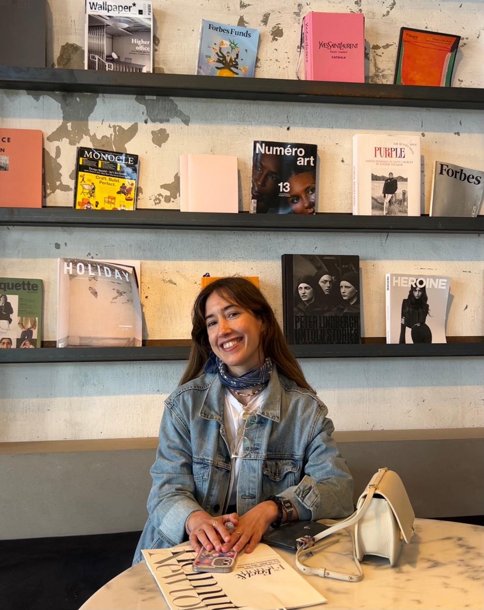

¡Hola!

Soy Carmen Llosa. Curiosa, alegre y observadora, tengo debilidad por todo lo relacionado con el arte y la estética. Me apasionan el cine, la literatura, la moda y, desde la cuna, la buena mesa.
Estudié ADE, básicamente porque era lo que tenía más salidas laborales. Mientras tanto, algunos veranos ayudaba en el restaurante de mis padres y afinaba mi paladar. Empecé a trabajar en finanzas y pronto entendí que necesitaba un entorno más creativo. Así pues, llegué al idílico mundo de la moda, donde he pasado más de siete años en diferentes departamentos. Los últimos cuatro, en Celia B, descubriendo lo que es una empresa con tantas capas como colores.
Paralelamente, me fui acercando de forma natural a la escritura y construyendo lo que hoy es mi estilo: irónico, cotidiano y ligero. Comencé contando pequeñas anécdotas en Instagram, escribiendo cartas a mis amigos —esto incluye también a affaires y amores— y, por supuesto, despotricando irregularmente en diarios.
Di con Nora Ephron y me tatué —figuradamente— eso de que todo es material para escribir. Y es lo que hago: escribo en La Soga Cultural y, recientemente, en Substack. También he colaborado con proyectos de gastronomía, arte y moda. Además, por casualidades de la vida —o quizá por mi gracia—, participo en algún que otro pódcast cultural.